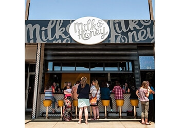
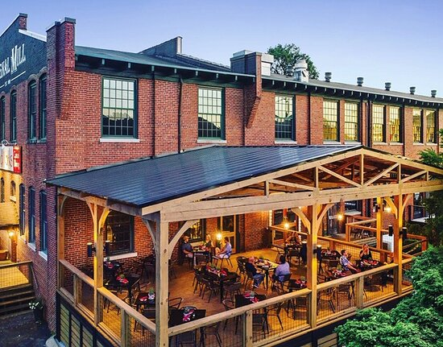
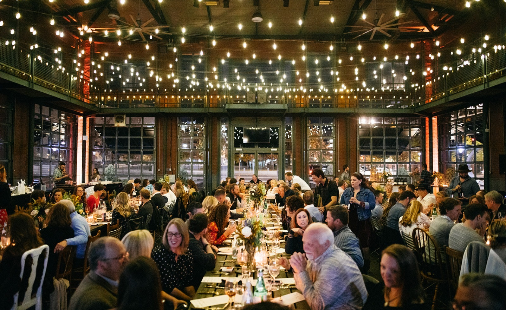
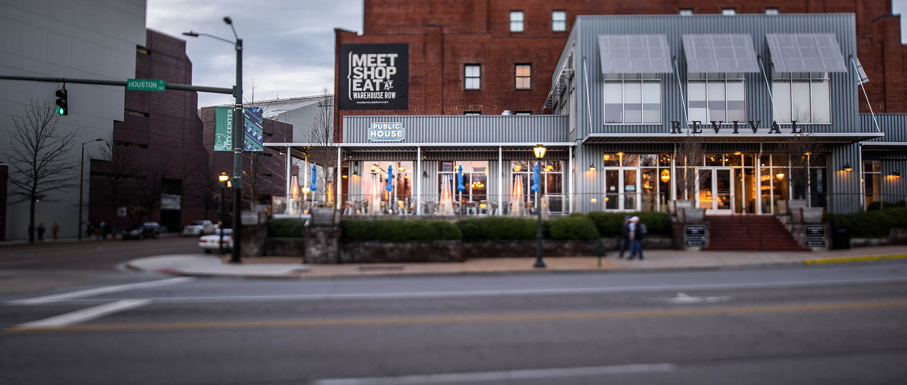

Food Destinations
Milk and Honey
Start your day with a delightful breakfast at Milk and Honey. This cute and hip coffee shop offers heavenly breakfast biscuits, burritos, and locally sourced farm produce. Don’t miss their Nutella Latte or Fig and Prosciutto Toast. They also have handmade poptarts, sea-salted caramels, and gelato
Food Works
For a memorable dining experience, Food Works is a must-visit. Their menu features modern Appalachian cuisine, and the ambiance is cozy and inviting. You must try ther signature Lizania or the Pan Roasted Grouper.
Easy Bistro & Bar
Easy Bistro & Bar combines French and Southern flavors to create a unique culinary experience. Their seafood dishes are delightful. in addition, you can enjoy the riverside view.
Public House
Public House is Known for its exceptional American cuisine. Public House offers a diverse menu and a cozy atmosphere. It’s a great place for a casual yet memorable meal that you will want to enjoy.
